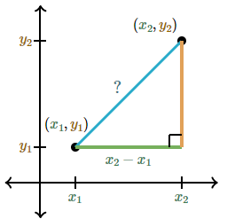
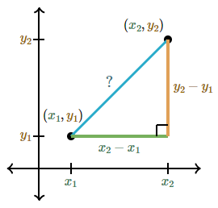
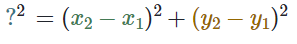
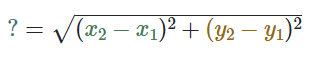

La distancia entre dos puntos no es más que la longitud del segmento de la recta que los conecta, el segmento de recta es el pedacito de recta de un punto a otro, puede ser de manera horizontal, vertical o oblicua (significa inclinada). Para conocer la distancia entre dos puntos se utilizará el teorema de Pitágoras que explica que: en todo triangulo rectángulo el cuadrado de la hipotenusa es igual a la suma de los cuadrados de los catetos.
La distancia entre dos puntos (x1, y1) y (x2, y2) esta dada por la siguiente operacion:
la cual te enseñaremos a resolver para que aprendas a resolver a traves del teorema de pitagoras.
Primero hay que localizar los puntos (x1, y1) y (x2, y2) en la grafica.

La longitud que existe entre estos 2 puntos es igual a la distancia que existe entre ellos 2.
Si dibujamos un triangulo rectangulo podremos usar el teorema de Pitágoras.

Una expresion para la longitud de la base es x2 - x1:
¿Pero por que esta expresion?
La mayoría de la gente tiene que detenerse a reflexionar por qué esta fórmula funciona. Por ejemplo, piensa que x1 = 3 y x2 = 7 Así es como encontraríamos la longitud de la base:
x2 - x1 = 7 - 3 = 4
si le metes coco esto tiene una coherencia total ya que la distancia de 3 a 7 es 4
igualmente una expresion para la longitud de la altura es y2 - y1
Ahora si se viene Pítagoras, vamos a escribir su ecuación:
Resolvemos para ? al tomar la raiz cuadrada de ambos lados:
Por fin hemos logrado resolver de forma sencilla este problema pero curiosamente, mucha gente no memoriza esta fórmula. En vez de eso, cada vez que quiere encontrar la distancia entre dos puntos, dibuja un triángulo rectángulo y usa el teorema de Pitágoras
tranquilo si no entendiste te pongo un video de mi buen amiguito El Facilicimo Verdad